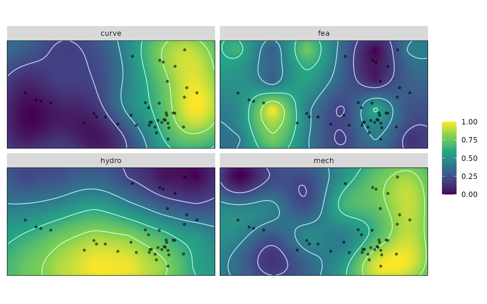
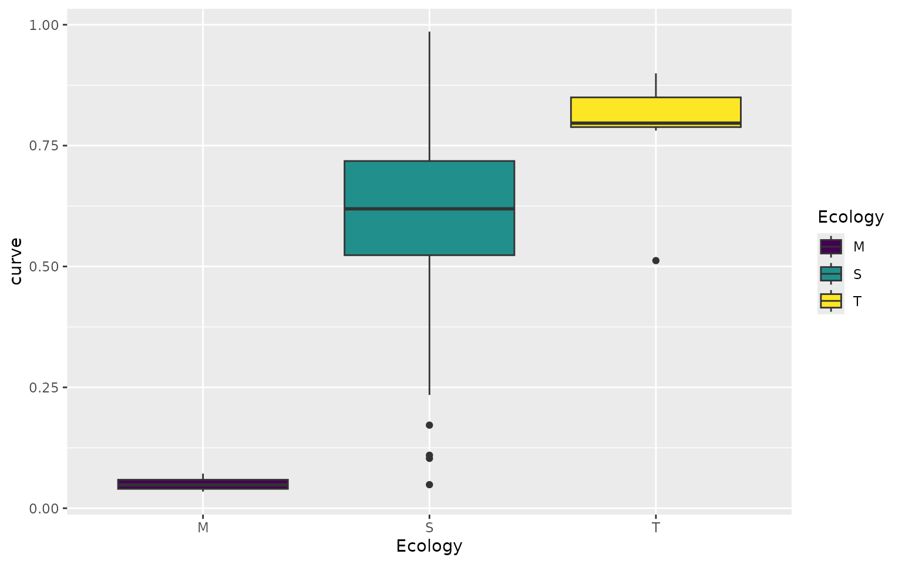
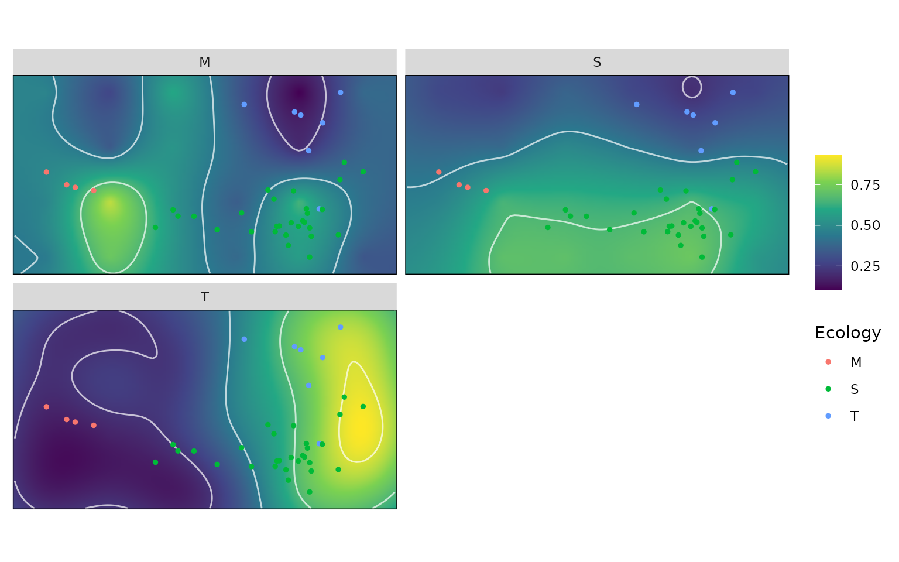
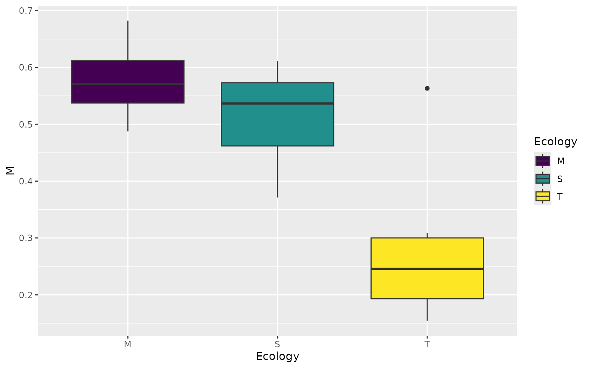
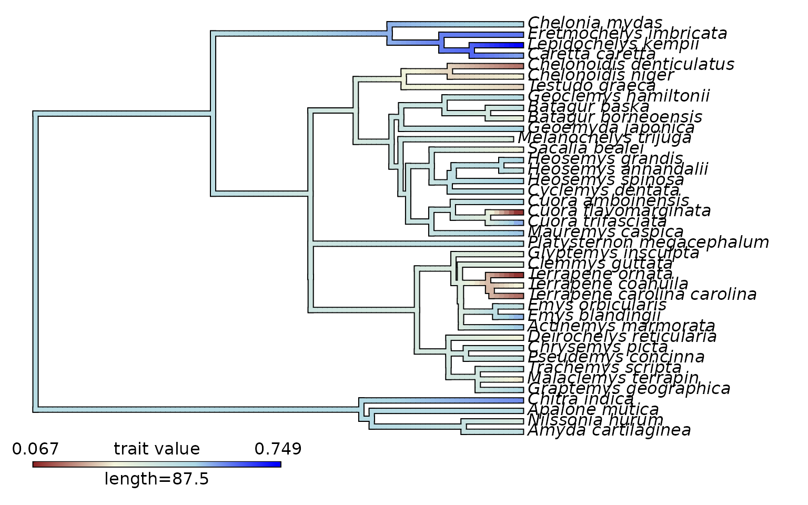

Plotting
NewPlots.RmdWe’ll now demonstrate some extra features of Mophoscape for plotting and working with performance surfaces and landscapes.
In this example dataset, we have morpholoigcal data for each turtle species, but the performance variables were measured across a grid of theoretical ‘warp’ models. We don’t have performance data measured for each individual specimen, but we can extract performance data based on the specimen’s position in morphospace and its height on the reconstructed performance surface.
data("turtles")
data("warps")
# Create an fnc_df object for downstream use
warps_fnc <- as_fnc_df(warps, func.names = c("hydro", "curve", "mech", "fea"))
# Above steps all in one:
kr_surf <- krige_surf(warps_fnc, hull = NULL, padding = 1.1,new_data = turtles)
#> [using ordinary kriging]
#> [using ordinary kriging]
#> [using ordinary kriging]
#> [using ordinary kriging]
#> [using ordinary kriging]
#> [using ordinary kriging]
#> [using ordinary kriging]
#> [using ordinary kriging]
plot(kr_surf)
Below, we extract these values from the performance surface grid, and then plot them according the species ecology.
turtles_kr <- sp_vals_from_grid(kr_surf, turtles)
library(ggplot2)
plt1 <- ggplot(turtles_kr, aes(x = Ecology, y = curve, fill = Ecology)) +
geom_boxplot()+
scale_fill_viridis_d()
plt1
We can do the same thing for the height of a set of species on an adaptive landscape. First, let’s generate the adaptive landscapes based on ecology (marine, semi-aquatic and terrestrial).
weights <- generate_weights(step = 0.05 , data = kr_surf)
#> 1771 rows generated
all_landscapes <- calc_all_lscps(kr_surf, grid_weights = weights)
wprime_by_Group <- calcWprimeBy(all_landscapes, by = ~Ecology)
plot(wprime_by_Group, ncol = 2)
And now, We can extract the heights of each specimen on each landscape and then plot. Let’s see how well species from each ecological grouping do on the marine turtle landscape.
turtles_lscp <- sp_vals_from_grid(wprime_by_Group, turtles)
plt1 <- ggplot(turtles_lscp, aes(x = Ecology, y = M, fill = Ecology)) +
geom_boxplot()+
scale_fill_viridis_d()
plt1
As well as plotting by these variables grouped by ecology (or family, or any other categorical variable) we can also plot the evolution of performance values or landscape heights across a phylogeny.
library(phytools)
#> Loading required package: ape
#> Loading required package: maps
data(turtles_tree)
trait_values <- turtles_lscp$M
names(trait_values) <- rownames(turtles_lscp)
turtle_cmap <- contMap(turtles_tree, trait_values,plot = FALSE)
turtle_cmap <-setMap(turtle_cmap,c('brown4','beige','lightblue','blue'))
plot(turtle_cmap)